중앙집중형 포털과 노후 맘카페를 넘어, 226개 기초지자체 단위 초지역 AI 라이프스타일 포털
로컬리(Locally)는 거시 뉴스에 가려진 동네 자치 뉴스, 분 단위 골든타임을 예보하는 동네 기상 방재, 맘카페를 대체하는
군·구 선거구 독립 AI 소통마당, 그리고 특허 기반 비정형 댓글 SLM과 원자적 재고 락을 적용한 골목상권 커머스를 430px 모바일 단일
뷰포트에 통합한 하이퍼로컬 OS입니다.
기술 성숙도 레벨 (TRL)
TRL 6단계
화성시 봉담 마스터 거점 실가동 완료
정부 공인 원천 특허
출원 완료 (1건)
특허 제10-2026-0182139호 등 독점 확보
공간 분리 거버넌스
전국 226개
기초지자체 단체장 선거구 마스터 완비
8주 실증 목표 (PoC)
주문 100건+
상인 수기 대조 공수 87.5% 절감 실증
SECTION 01. CORE CONCEPT
4대 동네 생활 결핍과 로컬리 혁신 컨셉
기존의 거대 플랫폼과 노후화된 온라인 커뮤니티가 해결하지 못했던 동네 단위의 생활 불편을 4대 핵심 축으로 정의하고, 최신 하이퍼로컬 AI 아키텍처로 전면 쇄신합니다.
PILLAR 01
동네 뉴스: 지자체 중심 분산 큐레이션
기존 문제: 네이버 중심의 중앙 집중형 뉴스 유통은 내 삶에 가장 필요한 지자체 조례·복지·도로 소식을 90% 이상 검색 누락시키며, 블로그나 오픈톡 가입을
강제함.
로컬리 혁신: 전국 40여 개 경합 도시 대조 및 주체-객체 전도 방어 엔진(Locality Validator v1.5.0)을 탑재하여, 군·구 선거구 3단
탭([전체], [효행구], [화성시])에 최신순 순수 행정 뉴스를 0ms SWR로 직배송합니다.
PILLAR 02
동네 기상: 국지성 기상이변 도착시간 예보
기존 문제: 버스·전철은 분 단위 도착 시각을 알 수 있으나, 1~2km 반경의 국지성 게릴라 폭우·폭설·도심 침수 도착 시각은 예보조차 없어 보행자 및 상권 피해
발생.
로컬리 혁신: NASA GIBS 및 RainViewer 데이터를 순수 TS로 역압축한 60fps 무격자 위성 구름 레이더와 초단기 시계열 파싱을 결합하여, "15분
뒤 화성시 봉담읍 시간당 20mm 강한 비" 형태의 1문장 AI 행동 티커를 제공합니다.
PILLAR 03
동네 마당: 226개 선거구 독립 AI 소통 공간
기존 문제: 스마트폰·AI 시대임에도 올드한 맘카페 중심의 낙후된 UI/UX에 갇혀 상업 광고와 특정 집단의 여론 왜곡이 발생하며, 실시간 동네 소통이 차단됨.
로컬리 혁신: 읍 단위 유동성 한계를 넘어 전국 226개 기초지자체 단체장 선거구 기준 구/군/시 독립 공간(`community_spaces`)을 구현하고, 6시간
TTL 번개모임 및 매 정시 AI 핫이슈 자동 요약 브리핑 카드를 서빙합니다.
PILLAR 04
동네 커머스: 골목상권 댓글 타임세일 자동화
기존 문제: 대형 프랜차이즈와 새벽배송·퀵커머스 잠식에 맞서 오픈채팅 공구로 자구책을 찾던 상인들이 비정형 댓글의 수기 장부 대조 피로와 8% 이상의 주문 누락으로
폐업 위기.
네이버 소셜 인증, `useAuthGuard` 미인증 쓰기 인터셉터, 신규 유저 원자적 프로비저닝 트리거
Phase 6 (공모)
8주 현장 실증 PoC & Top-Tier 진입
착수 준비
화성시 봉담 거점 상점 10곳 및 주민 100인 실거래 검증, 주문 누락 0건·폐기 30% 감축 실증
SECTION 06. UI/UX DESIGN SYSTEM
모바일 퍼스트 430px PWA & 5대 핵심 탭 실가동 UI/UX 쇼케이스
한 손 조작에 최적화된 430px 모바일 뷰포트 내에 고대비 다크 테마와 글래스모피즘을 적용하여 정보 인지 속도를 극대화했습니다. 실제 가동 중인 5대 핵심 탭 및 B2B 상점주 인증 파이프라인의 15개 대표 화면을 통해 기술 구현 완성도를 증명합니다.
TAB 01Living & Weather
우리동네 (날씨·생활 안전)
야후 기상 스타일의 60fps 무격자 위성 구름 레이더 미니 뷰포트, 분 단위 비구름 도착 1문장 AI 티커, 5대 환경변수 100점 러닝 지수 카드 및 팩트체크 로컬 뉴스 표출.
TAB 02Hyper-Local SNS
동네마당 (226개 선거구 독립 공간)
맘카페를 대체하는 실시간 군·구 독립 공론장 피드. 200자 제약 피드, 최대 10h TTL 시한부 번개모임, 매 정시 AI 핫이슈 3줄 요약 브리핑 카드 연동.
TAB 03Omni-Commerce
골목커머스 (타임세일 & 공구)
슈퍼마켓협동조합 연계 골목상권 DX. 실시간 잔여시간 타이머, 한정 재고 소진율 프로그레스 바, 상점주 번개 타임세일 간편 등록 모달 탑재.
TAB 04 & 05Map & User Profile
동네지도 & 내정보 (B2B 검증)
VWorld & MapLibre 3km/5km 듀얼 반경, 실시간 ITS CCTV 및 도로 돌발 중첩, 네이버 소셜 ID 프로필 및 국세청 사업자 진위확인 API 연동.
TAB 01기상방재 지능 · 대기환경 · 로컬뉴스
우리동네: 국지성 기상방재 & 생활안전환경 인텔리전스
기상청·VWorld·에어코리아 오픈 API를 결합하여 GPS 반경 5km 내의 국지성 기상이변을 60fps 위성 레이더로 직관화하고, 3대 페르소나별 선제 액션 플랜과 100점 러닝 지수를 실시간 산출합니다.
430px PWA 규격 3개 스크린 인터랙션
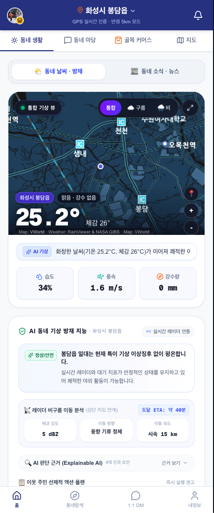
확대보기
SCREEN 01
VWorld 위성 레이더 통합 기상 방재 뷰
RainViewer & NASA GIBS 위성 레이더를 VWorld 표준 맵에 60fps 무격자 오버레이. 비구름 이동 ETA(도달 40분 전) 및 Explainable AI 4대 인과 요인 근거를 선제 제공합니다.
#VWorld레이더#ETA40분예보#AI기상티커#XAI근거제시
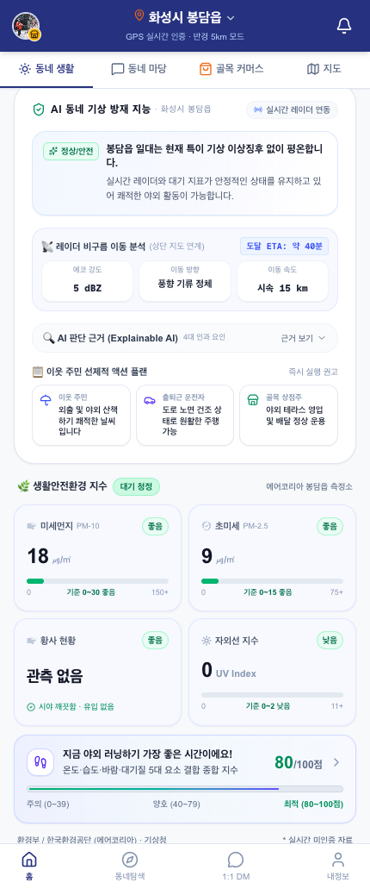
확대보기
SCREEN 02
3대 페르소나 액션 플랜 & 러닝 지수
외출 주민·운전자·상점주 3대 페르소나별 맞춤형 기상 행동 요령 제시. 에어코리아 봉담 측정소 대기질과 온·습도·바람을 통합 연산한 100점 러닝 지수(80점 최적)를 표출합니다.
#3대페르소나액션#에어코리아실시간#러닝지수80점#대기질정밀분석
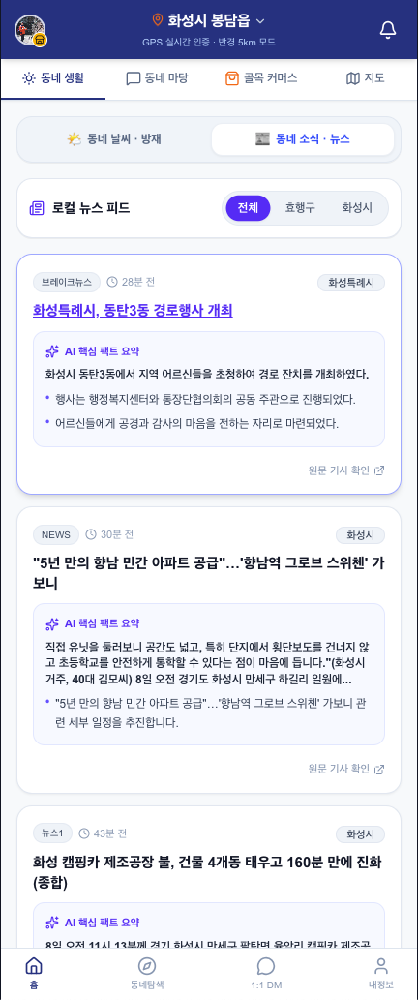
확대보기
SCREEN 03
행정구역 3단 필터 & AI 팩트 3줄 요약
중앙 포털에서 묻히는 효행구·화성시 기초지자체 밀착 뉴스를 큐레이션. 생성형 AI가 긴 보도자료를 핵심 팩트 3줄 불릿으로 즉시 요약하고 원문 링크를 투명하게 연동합니다.
#행정구역3단필터#AI팩트3줄요약#LocalityValidator#원문링크연동
TAB 02선거구 독립 공론장 · 시한부 번개 · 정시 AI 브리핑
동네마당: 226개 선거구 독립 자치 공론장 & 시한부 소셜 개더링
폐쇄적 맘카페의 독점 구조를 혁파하는 군·구 독립 공론장입니다. 200자 제약 피드, 최대 10h TTL 시한부 번개모임 개설 폼, 정시 자동 생성되는 동네 핫이슈 AI 브리핑을 제공합니다.
430px PWA 규격 4개 스크린 인터랙션
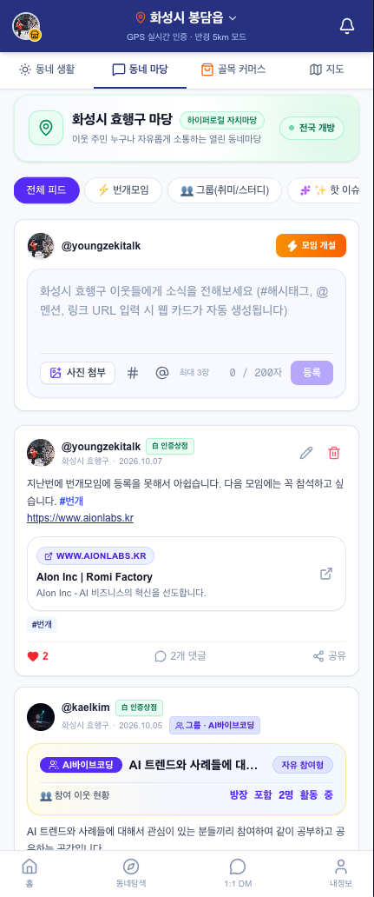
확대보기
SCREEN 04
효행구 자치마당 피드 & 웹 카드 생성
200자 제약 컴팩트 피드, 해시태그/멘션 입력 지원, 링크 첨부 시 OpenGraph 메타를 비동기 파싱하여 웹 프리뷰 카드를 자동 렌더링하며 인증상점 뱃지를 부여합니다.
#200자제약피드#OG자동파싱#인증상점뱃지#소모임카드연동
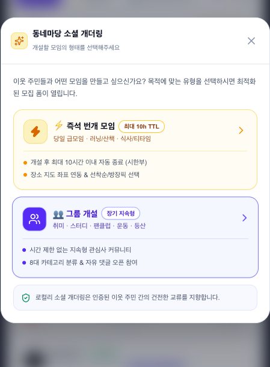
확대보기
SCREEN 05
소셜 개더링 모임 형태 분기 모달
주민 참여 목적에 맞추어 1) 최대 10시간 이내 자동 소멸하는 '즉석 번개 모임'과 2) 취미·운동 등 8대 카테고리 지속형 '그룹 개설'을 원클릭으로 선택하는 바텀시트 UI.
#최대10hTTL#즉석번개모임#지속형그룹개설#바텀시트UI
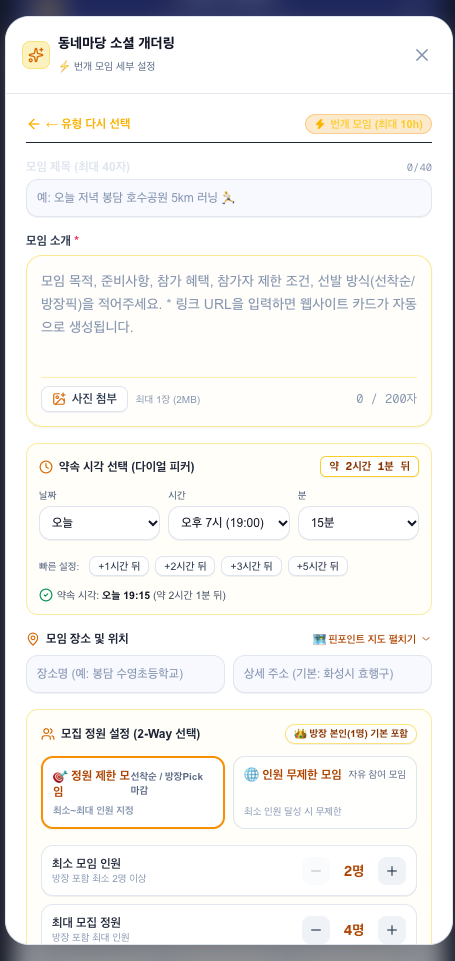
확대보기
SCREEN 06
번개 모임 세부 설정 & 지도 핀포인트
'+1시간 뒤', '+2시간 뒤' 원터치 시각 설정, 핀포인트 지도 좌표 연동 약속 장소 입력, 정원 제한형 vs 무제한형 2-Way 선택 및 스텝퍼 기반 정원 제어 기능을 지원합니다.
#원클릭시간피커#핀포인트지도연동#2Way정원설정#스텝퍼UI
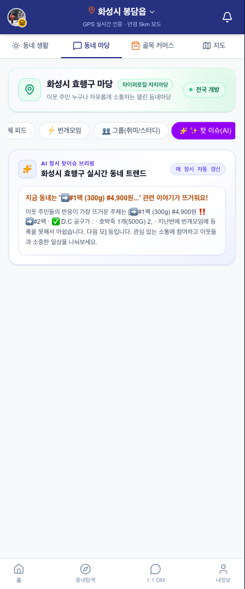
확대보기
SCREEN 07
매 정시 AI 핫이슈 자동 요약 브리핑
선거구 주민 피드와 댓글 데이터를 백그라운드 LLM이 매 정시 분석하여, 가장 뜨거운 동네 화제와 관심 상품/정보를 3줄 카드 형태로 요약 브리핑합니다.
#매정시자동갱신#LLM트렌드분석#3줄브리핑카드#효행구실시간
TAB 03골목상권 DX · 타임세일 · 주민 공동구매
골목커머스: 슈퍼마켓협동조합 연계 타임세일 & 공동구매 딜
수퍼마켓협동조합 및 골목 상인과 직거래하는 로컬 특가 플랫폼입니다. 실시간 잔여시간 타이머, 원자적 재고 프로그레스 바, 즉시 신청 스텝퍼, 상점주 번개 타임세일 등록 폼을 지원합니다.
430px PWA 규격 3개 스크린 인터랙션
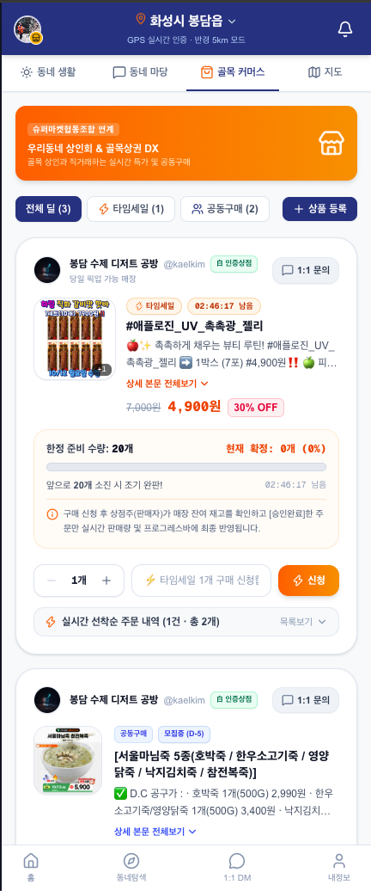
확대보기
SCREEN 08
실시간 타임세일 & 공동구매 딜 메인
02:46:17 잔여시간 실시간 카운트다운, 20개 한정 재고 소진율 프로그레스 바, 원클릭 수량 스텝퍼 및 선착순 주문 내역 아코디언을 단일 뷰포트에 집약했습니다.
#카운트다운타이머#재고프로그레스바#즉시신청스텝퍼#공동구매D-5
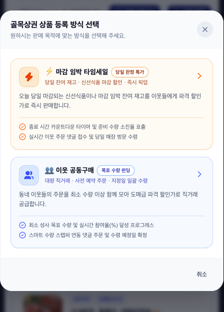
확대보기
SCREEN 09
골목상권 상품 등록 방식 선택 모달
상점주의 판매 목적에 따라 '당일 잔여 재고 파격 할인(타임세일)'과 '최소 수량 모아 도매가 직거래 공급(공동구매 펀딩)'으로 등록 분기를 나눈 직관적 안내 모달.
#상점주전용모달#당일잔여재고할인#대량직거래펀딩#원클릭등록분기
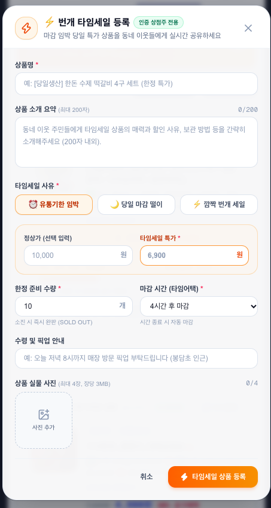
확대보기
SCREEN 10
번개 타임세일 실시간 등록 폼
유통기한 임박/당일 떨이 사유 태그 원터치 선택, 정상가 및 타임세일 특가 입력, 한정 준비 수량, 마감 시간(타임어택: 4시간 후 등) 설정 및 실물 사진 업로드를 지원합니다.
#사유태그입력#타임어택4h#즉시완판연동#상점주승격권한
TAB 04VWorld · 3km/5km 듀얼 반경 · ITS 실시간 CCTV & 돌발
동네지도: VWorld & ITS 국가교통망 연계 반응형 공간 인텔리전스
국토교통부 VWorld 및 국가교통정보센터(ITS) API를 실시간 연계하여 반경 3km 주유 생활권(초록)과 5km 광역망(파랑) 듀얼 원을 표출하고, 실시간 교통 돌발 및 CCTV 카메라를 지도에 중첩합니다.
430px PWA 규격 3개 스크린 인터랙션
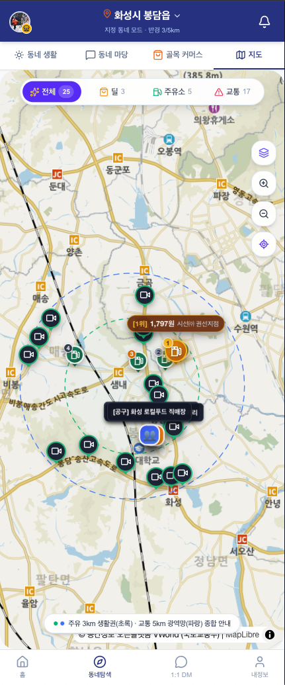
확대보기
SCREEN 11
공간 LOD & 3km/5km 듀얼 반경 원
VWorld & MapLibre 기반 3km 주유 생활권(초록 원)과 5km 교통 광역망(파랑 원) 시각화. 오피넷 최저가 주유소 핀([1위] 1,797원), 공구 상점 핀, ITS 실시간 CCTV 핀을 LOD 엔진으로 최적 분기합니다.
#VWorld국토부맵#3km5km듀얼반경#오피넷최저가#ITSCCTV핀
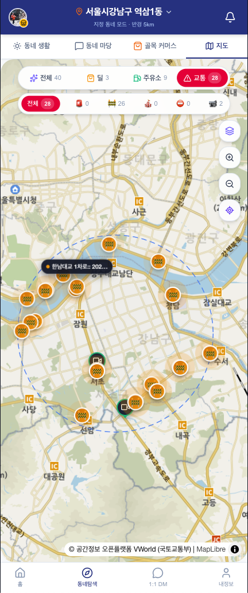
확대보기
SCREEN 12
ITS 실시간 돌발 교통 인텔리전스
국가교통정보센터(ITS) 및 경찰청 데이터를 연동하여 서울 강남권 5km 반경 내 실시간 돌발 상황(공사 26건, 사고, 통제 등)을 카테고리별 핀으로 지도 위에 직관적으로 표출합니다.
#국가교통정보센터#실시간공사26건#경찰청연계#반경5km필터링
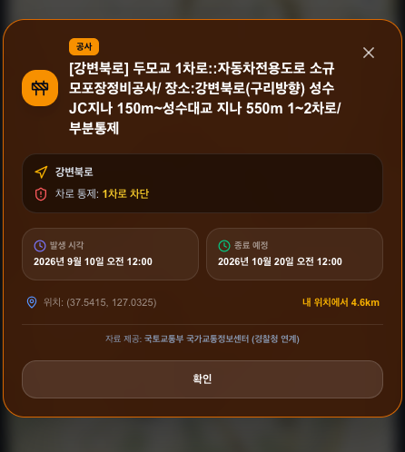
확대보기
SCREEN 13
도로 돌발 정보 상세 팝업 바텀시트
공사 구간(강변북로 두모교 1차로 부분통제), 차로 차단 현황, 발생 및 종료 예정 시각, 사용자 현 위치로부터의 직선 거리(4.6km)를 명확히 제시하여 운전자 사전 우회를 지원합니다.
#차로통제알림#내위치거리4.6km#우회경로가이드#바텀시트UI
TAB 05네이버 소셜 인증 · 상점주 대시보드 · 국세청 진위확인
내정보 Hub & B2B 상점주 공식 인증 파이프라인
네이버 소셜 ID 프로필 및 AI 음성 브리핑 쿼터 관리 허브이며, 전자상거래법 제13조를 준수하기 위해 국세청 공공데이터 포털 진위확인 API와 실시간 통신하여 상점주 권한을 원자적으로 부여합니다.
430px PWA 규격 2개 스크린 인터랙션
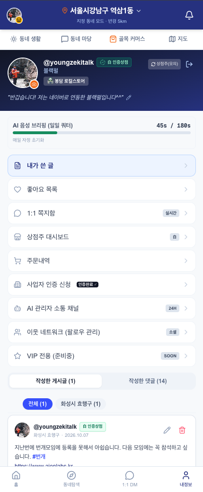
확대보기
SCREEN 14
내정보 프로필 & 상점주 대시보드 Hub
네이버 소셜 연동 계정 프로필, 상점주(모의) 전환 토글, AI 음성 브리핑 일일 쿼터 게이지(45s/180s), 1:1 실시간 쪽지함, 상점주 대시보드 및 유저 작성글·댓글 통합 관리 기능을 제공합니다.
#네이버소셜인증#AI음성브리핑쿼터#1대1실시간쪽지#상점주모의전환
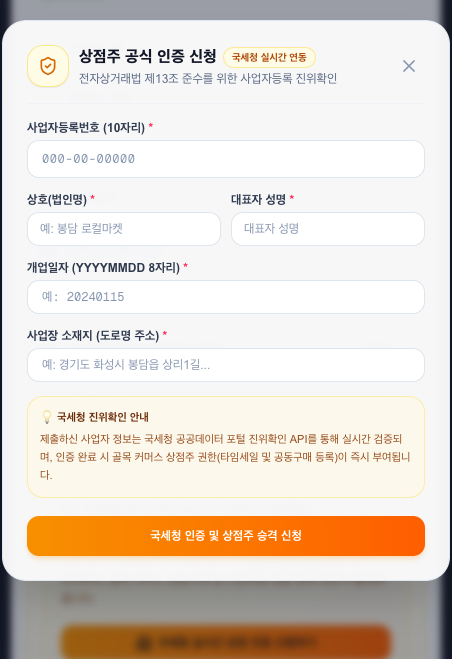
확대보기
SCREEN 15
국세청 공공데이터 연계 상점주 공식 인증
전자상거래법 제13조 준수를 위해 사업자번호(10자리), 상호명, 대표자 성명, 개업일자, 도로명 주소를 입력받아 국세청 공공데이터 진위확인 API와 실시간 대조 검증 후 상점주 권한을 부여합니다.
#국세청진위확인API#전자상거래법제13조#실시간사업자검증#상점주권한부여
SECTION 07. PERSONA USE CASES
4대 핵심 페르소나별 실생활 활용 시나리오
골목 상점주, 퇴근길 러너, 지자체 공무원, 전입 1인 가구 청년 등 실제 동네를 살아가는 페르소나들이 로컬리를 통해 어떤 실질적 효용을 얻는지 증명합니다.
박영진 점주 (54세)
화성시 봉담읍 과일·청과 상점 운영 소상공인
시나리오: 비가 내리기 시작해 저녁 도보 손님이 끊기자, 당일 폐기 위기에 처한 복숭아 10박스를 '10초 마감 타임세일'로 피드에
등록합니다. 주민들이 댓글로 주문하자 AI가 수량과 픽업시간을 자동 장부로 정형화하고 재고를 원자적으로 차감합니다.
배달앱 15% 수수료 0원, 수기 장부 대조 피로 종결, 당일 폐기 손실 100% 방어
이수민 대리 (31세)
봉담 신도시 거주 4년 차 직장인 & 야외 러너
시나리오: 퇴근 후 호수공원 러닝을 위해 앱을 켭니다. '15분 뒤 봉담읍 20mm 폭우 도착' 1문장 AI 티커와
러닝 지수 38점(주의)을 확인하고 즉시 실내 트레드밀로 일정을 변경하여 도심 하천 고립 위험을 완벽히 피합니다.
버스 도착처럼 분 단위 침수 시각 사전 인지, 5대 환경변수 기반 운동 부상 예방
김민준 주무관 (38세)
화성특례시청 자치행정과 로컬 홍보 담당
시나리오: 화성시 청년 월세 지원 및 바우처 조례 보도자료를 배포합니다. 중앙 포털에서는 인근 수원·용인 기사에 밀려 묻혔으나, 로컬리의
Locality Validator v1.5.0을 통해 관할 효행구·화성시 주민 피드 3단 탭에 단일 대표 기사로 100% 노출됩니다.
관제 앱 개발 혈세 낭비 없이 226개 선거구 주민에게 핵심 정책 도달률 400% 증대
정우진 대학생 (24세)
봉담 협성대 인근 1인 가구 자취생
시나리오: 맘카페 가입 승인이 거절되어 동네 정보를 얻지 못하던 중, 로컬리 동네마당에 접속합니다. 선거구 독립 공간에서
'6시간 TTL 자취생 반찬 나눔 번개'에 참여하고, 매 정시 AI가 3줄로 브리핑해 주는 동네 핫이슈를 통해 지역 사회에 안착합니다.
폐쇄적 맘카페 장벽 탈피, 1인 가구 고립감 해소 및 실시간 동네 연결망 형성
SECTION 08. VIDEO DEMO & PATENT PROOF
유튜브 라이브 데모 영상 및 정부 공인 특허 증빙
430px 모바일 PWA 환경에서 실가동되는 로컬리의 4대 핵심 서비스 시연 영상과, 지식재산처(특허청) 공식 출원사실증명원을 투명하게 공개합니다.
정부 공인 특허 제10-2026-0182139호 출원 완료 (2026.09.22)
발명의 명칭: 비정형 자연어 인터페이스 기반의 언어 모델을 이용한 실시간 상거래 주문 정형화 및 원자적 동시성 재고 제어 시스템, 그 동작 방법, 컴퓨터 판독 가능
기록매체 및 컴퓨터 프로그램
출원번호: 10-2026-0182139 우선일: 2026년 09월 22일 발명자/출원인: 김 영 주무관청: 특허청(지식재산처)